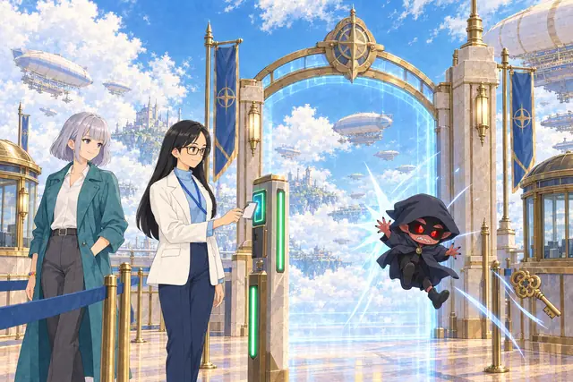

Land It Well, Dewi! · EP 7
Guards at Every Gate
CAF Secure: security through every phase, Zero Trust
Text version of the comic.
📍 The sky harbor · main gate
Phase 6: Secure. Security isn't one gate at the entrance. It runs through every phase.
Open HatchPsst... an open hatch somewhere? A reused password? A forgotten public endpoint?
SoraSomeone is always checking, little one.
BayuCAF's Secure methodology spans strategy, planning, readiness, adoption, governance and operations.
CAF Secure: security in every phase
- 👥Teams and rolesUnderstand who does what in security
- 🧭StrategyIntegrate security into the adoption strategy
- 🗺️PlanPlan a secure adoption
- 🏗️ReadyReady a secure cloud estate
- 🚚AdoptPerform the adoption securely
- ⚖️GovernSecurely govern the estate
- 🛠️ManageSecurely manage the estate
- Zero Trust: verify explicitly · use least-privilege access · assume breach (the Zero Trust overview now says "assume compromise").
- CIA triad: confidentiality, integrity, availability.
DewiZero Trust means "never trust, always verify"?
SoraLearn's three principles: verify explicitly, use least-privilege access, and assume breach. The newest Zero Trust page calls that last one "assume compromise".

DewiMy badge, my device, my role: all checked. And every check is logged.
Open HatchOw! That barrier is NOT open!
Zero Trust: every request is checked
- Verify explicitly: Conditional Access brings signals together (user, device, location, risk) to make a decision.
- The policy asks for MFA. Then Dewi reaches only the app her role needs: least privilege.
- The app reads its secret from Key Vault with a managed identity: no credentials in the code.
- A stolen password from an unknown device? Conditional Access can block the sign-in.
- Assume breach: Defender for Cloud and Microsoft Sentinel, a cloud-native SIEM, collect signals to detect and respond.
✎ Learn's newest Zero Trust page calls the third principle "assume compromise" (previously "assume breach").
DewiAnd how do we know we're getting better?
SoraCAF suggests tracking secure score in Microsoft Defender for Cloud.
SoraIncidents still happen, so CAF covers the whole lifecycle: readiness, detection, triage, containment, eradication, recovery and post-incident learning.
Checkpoint: Which one is NOT one of the three Zero Trust principles named on Learn?
- Verify explicitly
- Use least-privilege access
- Assume breach (now also called "assume compromise")
- Trust the internal network
Answer: Trust the internal network. Zero Trust drops the idea of a trusted internal network. Every request is verified explicitly.